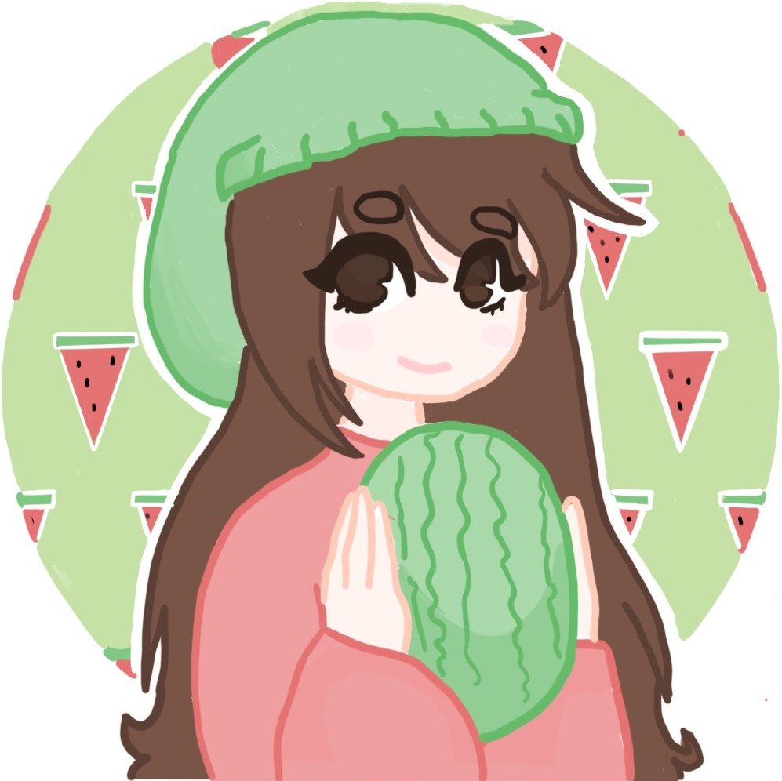

Melon's Gamer Profile
About Me
Heyyo! My gaming username is ElemelonWind, but you can call me Melon. I'm an enthusiastic but noob gamer who tryhards every game I happen to get obsessed with. I just like to enjoy my time playing video games with my friends, even though I happen to lose. A lot.
Though I don't like many games, I really get into the ones I play. Here is a list of the games I took pretty seriously.
Brawl Stars
Username: Derp Gal
I got into Brawl Stars at the end of 8th grade because literally ALL of my friends played it, even the ones who didn't really like video games. I downloaded it because I was super bored and found out it was pretty fun.
My favorite gamemode is showdown because the only objective is to survive, which has some interesting gameplay. Even though sometimes that means teaming or bush-camping.
My favorite brawlers are Sprout, Pam, Penny, Jessie, and Edgar. Each has unique mechanics/personality and some are just plain adorable.
I also created a bunch of alt accounts for less stressful gameplay. My main mini is DerpGal2.0, and some other random minis I had are SparklingKiwi, ShiningAngel, and SMH.
I joined my friend's club, the New Order, for a while before moving to AE Nebula, where I spent the rest of my active days. When I stopped playing as often I was kicked and I moved to a new club called Born4Mayhem, but it started dying so I just moved to AE Vague.
Before the trophy reset update, I was almost at 18k trophies, but afterwards I was set back down to 16k. I kind of lost motivation after that and my sporadic sessions faded to complete inactivity.
Back to TopMinecraft
Username: ElemelonWind
.png)
On Minecraft, I mainly play Hypixel Bedwars. I occasionally also play Duels, and rarely play Skywars, Murder Mystery, and Skyblock. Also, I sometimes go on my discord server's realm and my SMP, as well as my friends' SMPs.
I got into Minecraft after years laying dormant on my computer. My brother introduced me to the Dream Team, and from there I rediscovered the mcyt community, which led to me being interested in survival multiplayer.
However, I mostly play bedwars. I've always loved watching bedwars, and for some reason it never occurred to me that I could actually play it. So I started playing a bit and really fell in love with the game. Sure, I raged a bit. Sure, I'm really, REALLY bad. But it's fine.
I main triples, because there are teammates to carry me but not too many people in the game. There are also less teams, so it's easier to win.
I used to only defend the base and camp diamonds, but that never got me any wins. I finally learned to ninja bridge correctly and started taking risks and rushing others. It led to way more fun and intense gameplay even though sometimes I would throw the game by being too aggressive.
I slowly started improving at pvp and I also found a few friends that I could play with sometimes. I don't play as much anymore, but I still consider myself active on the server.
Back to TopAmong Us
Username: Melon
Character: Purple with Flower Crown
I started playing Among Us when popular streamers such as Pokimane, Valkyrae, and Corpse started blowing up. I played with friends and made new friends, but it just got kind of repetitive after a while, so I stopped.
I loved playing as impostor, even though it was super stressful. My favorite map is Polus because it's an open map so it's harder for crewmates to catch the impostors and they actually have to think.
Back to TopOther Games
At some point I want to try playing Genshin Impact and perhaps Valorant or Raft. :)
Back to Top